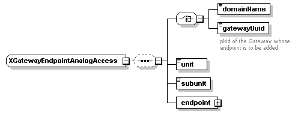

| diagram |  | ||
| namespace | http://www.cisco.com/AXL/API/10.5 | ||
| children | domainName gatewayUuid unit subunit endpoint | ||
| used by |
|
||
| source | <xsd:complexType name="XGatewayEndpointAnalogAccess"> <xsd:sequence minOccurs="0"> <xsd:choice minOccurs="1"> <xsd:element name="domainName" type="xsd:string" nillable="false" minOccurs="1" maxOccurs="1"/> <xsd:element name="gatewayUuid" type="axlapi:XUUID" minOccurs="1" maxOccurs="1"> <xsd:annotation> <xsd:documentation>pkid of the Gateway whose endpoint is to be added</xsd:documentation> </xsd:annotation> </xsd:element> </xsd:choice> <xsd:element name="unit" type="axlapi:XInteger" default="0" nillable="false" minOccurs="1" maxOccurs="1"/> <xsd:element name="subunit" type="axlapi:XInteger" nillable="true" minOccurs="1" maxOccurs="1"/> <xsd:element name="endpoint" type="axlapi:XGatewayEndpointAnalog" minOccurs="1" maxOccurs="1"/> </xsd:sequence> </xsd:complexType> |
| diagram | |||||
| type | xsd:string | ||||
| properties |
|
||||
| source | <xsd:element name="domainName" type="xsd:string" nillable="false" minOccurs="1" maxOccurs="1"/> |
| diagram | |||||||
| type | axlapi:XUUID | ||||||
| properties |
|
||||||
| facets |
|
||||||
| annotation |
|
||||||
| source | <xsd:element name="gatewayUuid" type="axlapi:XUUID" minOccurs="1" maxOccurs="1"> <xsd:annotation> <xsd:documentation>pkid of the Gateway whose endpoint is to be added</xsd:documentation> </xsd:annotation> </xsd:element> |
| diagram | |||||||
| type | axlapi:XInteger | ||||||
| properties |
|
||||||
| source | <xsd:element name="unit" type="axlapi:XInteger" default="0" nillable="false" minOccurs="1" maxOccurs="1"/> |
| diagram | |||||
| type | axlapi:XInteger | ||||
| properties |
|
||||
| source | <xsd:element name="subunit" type="axlapi:XInteger" nillable="true" minOccurs="1" maxOccurs="1"/> |